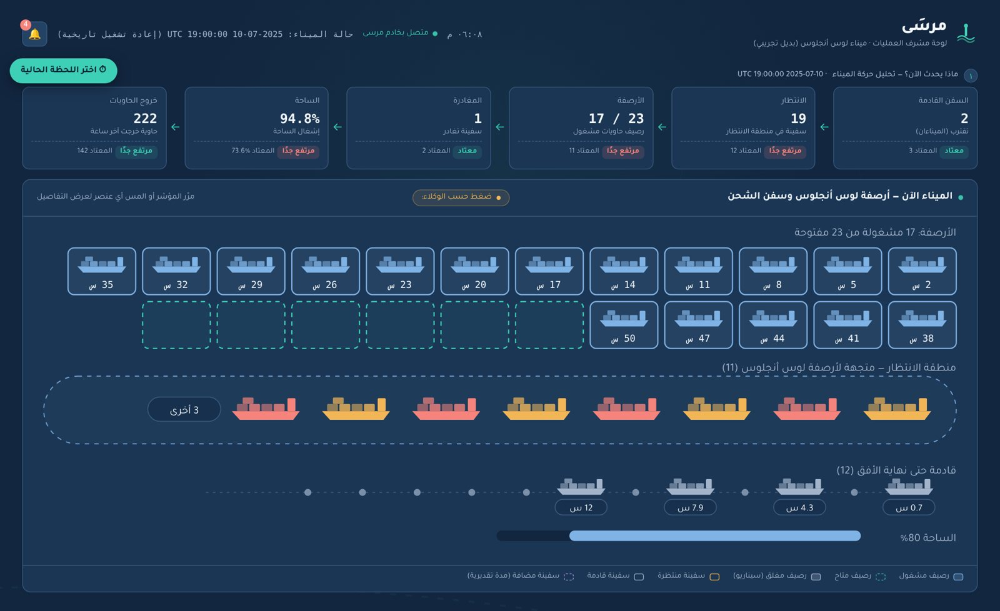
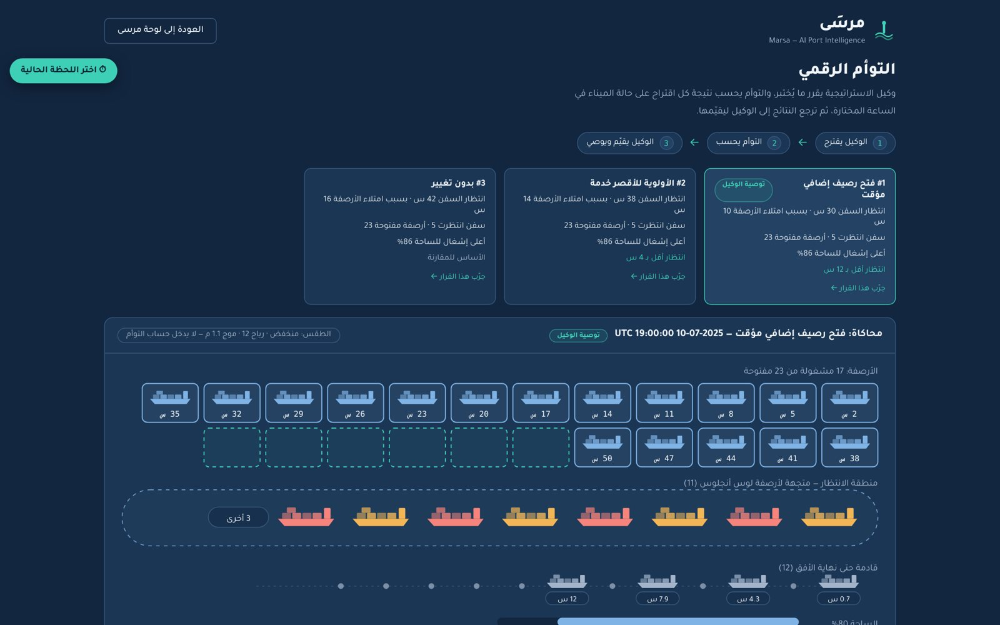

AgentX Hackathon · 3rd Edition · Oct 2026
Marsa (مرسَى)
A predictive digital twin for ports · Logistics & Ports Track
Ports usually find out about congestion after it happens. In July 2026, Jeddah Islamic Port's container yard reached 89% utilisation and some carriers paused transit bookings. Marsa warns the port supervisor before congestion builds, finds where the pressure comes from, and tests possible decisions on a digital copy of the port before recommending one. The supervisor always makes the final call.
6 hearly congestion forecast
24 hsimulated on the digital twin
Team of 4built during the hackathon
My role · Data & System Integration
- Built the supervisor's dashboard.
- Built the maritime agent and created the synthetic data used by the agents.


Hackathon presentation
Open as PDF ↗